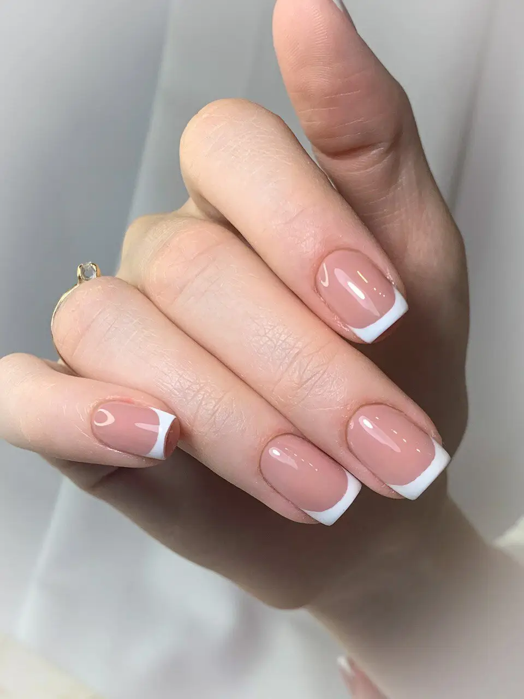
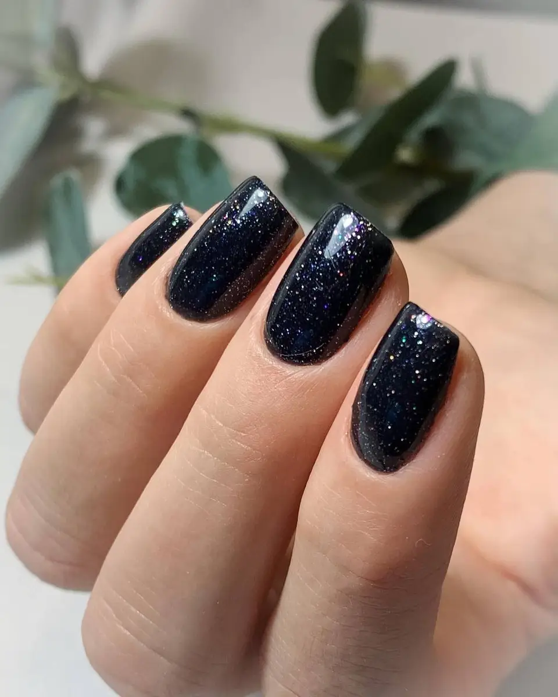
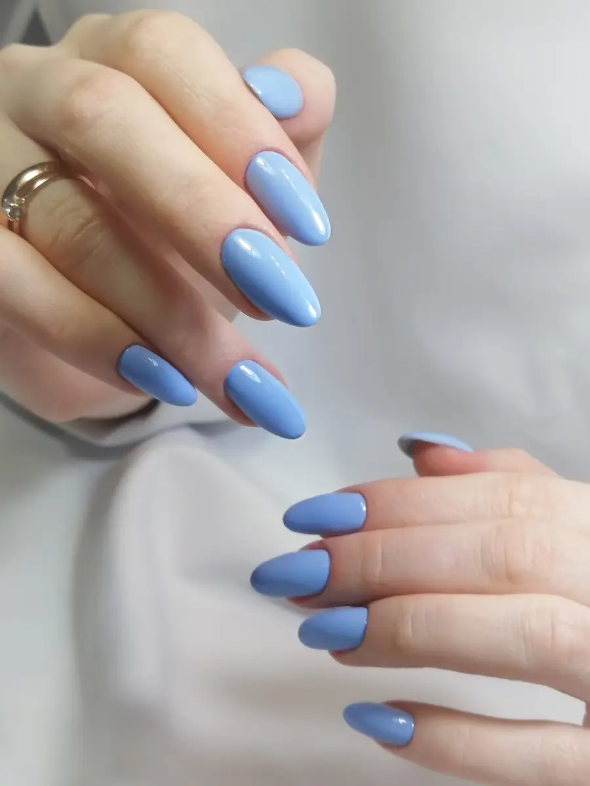
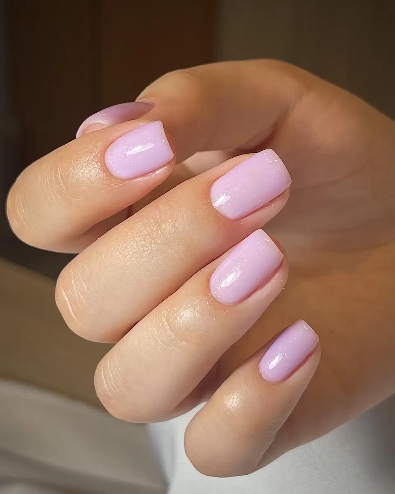

Ногтевая студия · Казань
Аппаратный маникюр в Казани на Николая Ершова
Студия маникюра на улице Николая Ершова, 62В: выберите услугу, день и время – чат в Telegram откроется с готовым текстом. Опыт мастера – с 2008 года.
- Вт–Сб с 9:00 до 20:00
- Рейтинг 4,9, 28 отзывов
- Парковка, Wi-Fi, лифт

Цены
Цены с карточки студии на Яндекс.Картах. Прайс на карточке короткий, остальное называет мастер при записи.
Маникюр
- Аппаратный маникюр с гель-лакомпо прайсу карточки2 400 ₽
- Классический женский маникюр с покрытиемцена из особенностей карточкиот 2 300 ₽
- Дизайн ногтейотмечен в особенностях карточки; цену называет мастеруточнить
На карточке в прайсе одна позиция (обновлено 5 августа); «от 2 300 ₽» – из особенностей карточки. Окончательную стоимость мастер называет при записи.
Как записаться
- 01
Выберите услугу, день и время
В блоке записи вверху страницы: цена видна сразу, если она есть на карточке.
- 02
Нажмите «Записаться»
Откроется Telegram с готовым сообщением – останется его отправить.
- 03
Дождитесь ответа в чате
Если удобнее по телефону – позвоните, номер в контактах ниже.



Что есть в студии
Опыт с 2008 года
Так указано в описании услуги на карточке студии.
Форма ногтей
Клиентки пишут, что мастер исправила форму ногтей и восстанавливала их после других салонов.
Аппаратный маникюр и дизайн
На карточке отмечены женский маникюр, аппаратный маникюр и дизайн ногтей.
Удобно добраться
На карточке отмечены парковка, лифт и вход, доступный для коляски.
Отзывы с Яндекс.Карт
«Гульнара специалист высшего класса. Я хожу к ней 5 лет и не хочу менять такого классного мастера.»
Лидия Спатлова · 7 сентября
«Я нашла своего мастера! Ногти у меня проблемные, Гульнара скорректировала форму ногтей, маникюр всегда очень изящный, цвет я выбираю натуральный.»
Марина П. · 28 июля
«Нашла своего мастера! Идеальный маникюр:обработка, покрытие, 3 недели ногти аккуратные. Большая цветовая палитра. Гульнара мастер своего дела и приятный в общении человек»
Катерина Темирова · 10 июля 2021
Отзывы с карточки на Яндекс.Картах, без правок.
Частые вопросы
Где находится студия?
Казань, улица Николая Ершова, 62В, корпус 1. На карточке отмечена парковка, а клиентка пишет, что с парковкой проблем нет.
Как записаться?
Выберите услугу, день и время в блоке записи вверху страницы – откроется Telegram с готовым сообщением. Можно позвонить: +7 (903) 062-34-45.
Какие цены и насколько они актуальны?
На карточке студии указан аппаратный маникюр с гель-лаком за 2 400 ₽ (прайс обновлён 5 августа) и «от 2 300 ₽» за классический маникюр с покрытием. Остальное называет мастер при записи.
Делаете ли вы дизайн ногтей?
Да, дизайн ногтей отмечен в особенностях карточки. Цену называет мастер.
Можно ли прийти с животными?
На карточке отмечено: с животными нельзя.
Как можно оплатить?
Наличными и онлайн.
Доступна ли студия на коляске?
На карточке вход и помещение отмечены как доступные для коляски, есть лифт и парковка для людей с инвалидностью.
В какие часы вы работаете?
Со вторника по субботу с 9:00 до 20:00, понедельник и воскресенье – выходные.
Записаться в студию маникюра
- Адрес
- улица Николая Ершова, 62В, корп. 1, Казань
- Часы
- Вт-Сб 09:00-20:00, пн и вс выходные
- Телефон
- +7 (903) 062-34-45